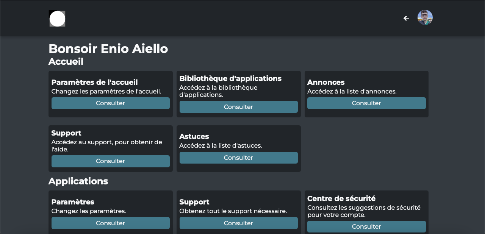
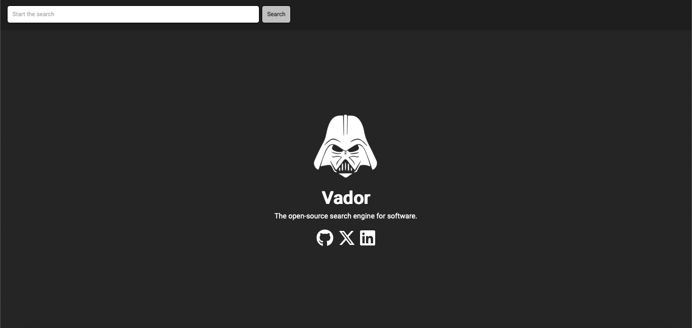
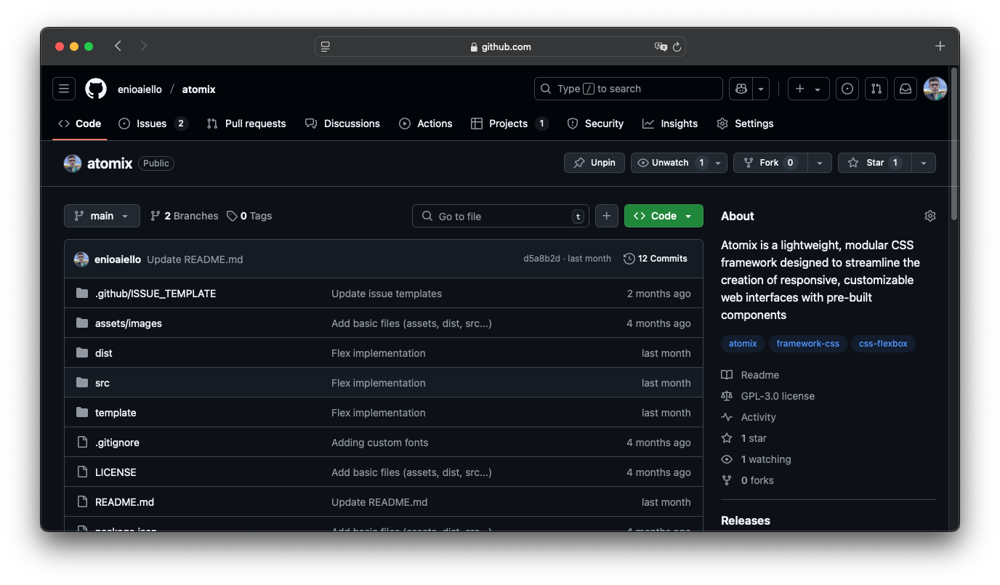

Projets

Admin Services
Un projet qui m'a permis d'apprendre les technologies front-end (HTML, CSS et JavaScript).

Vador
Un simple "moteur de recherche" permettant de rechercher des programmes FOSS et de les téléchargés depuis leur lien officiel.

Atomix
Un projet expérimental de framework CSS compilé via SCSS. Ultra simple à maitriser.